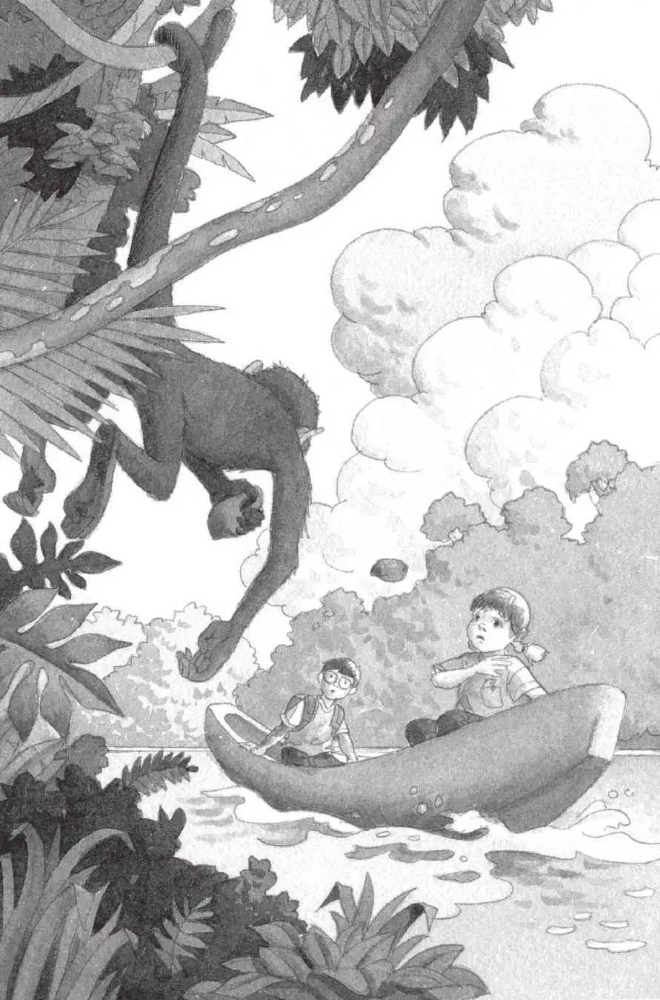

“吱吱！吱吱！”小老鼠的脑袋从安妮的口袋里探了出来。它似乎在朝小猴子吼叫。
“别担心，花生米，”安妮说，“它不过是一只小猴子，不会伤害我们的。”
可是，小猴子突然抓住树上的一颗红果子，朝独木舟扔了过来。
“当心！”杰克大喊一声。
红果子落进水里，溅起一片水花。
小猴子的尖叫声更响了。
它又抓了一颗红果子。
“别朝我们扔东西！”安妮高喊。
可是，小猴子又把红果子对着他们丢了过来。
杰克和安妮又猫腰躲闪。红果子扑通一声落进了水里。
“住手！”安妮大声喊道。
小猴子只是挥了挥胳膊，又尖叫起来。
“哦，讨厌！”杰克说，“我不敢相信这是真的。”
小猴子抓起第四颗红果子，对着杰克和安妮扔了过来。

砰！红果子落进了独木舟。
安妮捡起红果子。她站起身，把红果子朝小猴子扔回去。
没砸中。独木舟摇晃起来，安妮差点儿摔出去。
小猴子的尖叫声比刚才更响了。
“走开！”安妮喊道，“你是世界上最讨厌的家伙！”
小猴子不叫了。
它看了一眼安妮，然后身子一荡，钻进了森林。
“我好像让它伤心了。”安妮说。
“管它呢！”杰克说，“它就不应该扔东西。”
“糟了，”安妮说，“现在下雨了。”
“什么？”杰克说着抬起头，一滴雨点落进了他的眼睛。
“哦，倒霉。”杰克说。
“你以为这儿的天气会怎样呢？”安妮说，“这儿毕竟是热带雨林。”
一阵风朝独木舟刮过来。
雷声从天空中滚过。
“刮风、下雨的时候，待在河上是不安全的。”杰克说，“我们必须赶紧回到岸上去。现在就回去。”
“可是怎么回去呢？”安妮说，“我们不能蹚水，也不能游泳。水虎鱼、蛇和鳄鱼会咬死我们的。”
尖叫声再一次划破了寂静。
“哦，糟糕。”杰克说。那只讨厌的小猴子又回来了。
这次，小猴子用一根长长的棍子指着独木舟。
杰克蹲下身。难道小猴子要把棍子朝他们扔过来，就像投掷长矛那样？
安妮跳起来，对着那只小猴子。
“当心！它疯了。”杰克说。
然而，小猴子只是直直地盯着安妮，安妮也直直地盯着它。
过了很长时间，小猴子似乎露出了微笑。
安妮也朝它笑了。
“怎么回事？”杰克问。
“它想帮助我们。”安妮回答。
“怎么帮？”杰克不解地问。
小猴子伸出那根长长的棍子。
安妮抓住棍子的另一头。
小猴子使劲地拉棍子。独木舟开始朝岸边漂过去。
小猴子一直把独木舟拖到了河岸上。